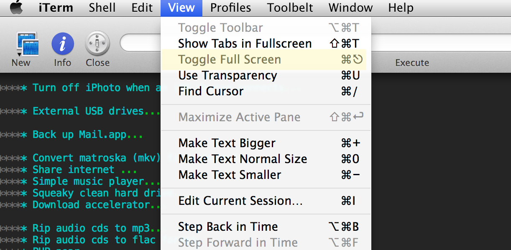

OSX Cheat Sheet
Table of Contents
- 1. Routing table
- 2. Show/Hide hidden files Finder
- 3. Setting the hostname
- 4. Anti alias
- 5. Homebrew package management
- 6. Colored terminal window
- 7. Picture file location of Photobooth
- 8. CLI Copy Paste
- 9. Assistive Technology in 10.9 (mavericks)
- 10. Scanning
- 11. Turn off iPhoto when an iOS device connects
- 12. External USB drives
- 13. Back up Mail.app
- 14. Convert matroska (mkv) files to mp4
- 15. Share internet
- 16. Simple music player
- 17. Squeaky clean hard drive
- 18. Download accelerator
- 19. Rip audio cds to mp3
- 20. Rip audio cds to flac format
- 21. PHP pear
- 22. PHAR & PHP composer
- 23. Write markdown files, export LaTex, HTML etc
- 24. Show the week number in cal
- 25. Keyboard shortcut for Full Screen
- 26. CLI music player
- 27. Fixing homebrew after upgrade to 10.9
- 28. Screen shooting
1 Routing table
The routing table does not show using route print in OSX, this may have worked in Linux but not here. Use the command netstat -nr instead
2 Show/Hide hidden files Finder
The OSX Finder does not show hidden files by default. A file is hidden if the name starts with a dot or period e.g. .bash_profile, .emacs.d etc. If you want to see these kinds of files in the Finder, execute this commands using the Terminal.app
$ defaults write com.apple.finder AppleShowAll Files -bool YES $ killall Finder
To reverse the process, execute the following commands
The killall command will restart the Finder. After it has restarted, you should be able to see hidden files.
$ defaults write com.apple.finder AppleShowAll Files -bool NO $ killall Finder
3 Setting the hostname
The hostname command, when executed on a terminal window will give you, well, the hostname, which is the name of your machine. On a networked environment, this hostname gets affected by DHCP; it overrides the hostname of your machine. If you want to set the hostname, execute sudo scutil --set HostName anyname_you_want on a terminal window
4 Anti alias
On the terminal, type
$ defaults --currentHost write -globalDomain AppleFontSmoothing -int 1
The value 1 in -int 1 means light anti aliasing, a value of 2 will set anti aliasing to medium and and 3 will be for strong anti aliasing
5 Homebrew package management
You need XCode before you can install homebrew. Make sure you have downloaded it from the AppStore and that you have also installed it's command line utilities. After that, get a terminal window and type
$ ruby -e "$(curl -fsSL https://raw.github.com/Homebrew/homebrew/go/install)"
Ruby comes packaged with OSX so this command will work. Now test it out.
$ brew install git # will install git $ brew install wget $ brew install curl $ brew install axel # wget in steroids
6 Colored terminal window
Open up ~/.bash_profile and add the following line
alias ls="ls -G"
7 Picture file location of Photobooth
They are in ~/Pictures/Photo Booth Library Pictures
8 CLI Copy Paste
To copy content of files while on a terminal, use pbcopy e.g. cat somefile | pbcopy. The contents of somefile are now on the clipboard. You can paste it with the usual CTRL v if you are using any GUI editor. If you need to perform a paste on the terminal, use pbpaste e.g. echo pbpaste, the contents of the clipboard will be echoed to the terminal.
9 Assistive Technology in 10.9 (mavericks)
Not anymore in its usual place. This is now in System Preferences -> Security and Privacy -> Privacy. TextExpander will not work as soon as you upgrade to 10.9. But if you quickly visit and reenable TextExpander in Assistive technology dialog window, all will be well again
10 Scanning
Use Image capture, the Scaner and Printer Queue or Preview. All of these built-in software in have capabilities for image capture
11 Turn off iPhoto when an iOS device connects
When you plug an iOS device, iPhoto quickly springs into action offering to sync Photos. You can turn it off
- Launch Image Capture,
cmd + spacethen type Image Capture in Spotlight - On the lower left region of Image Capture window, look for Connecting this iPad opens iPhoto
- Click the dropdown. Choose No Application
12 External USB drives
You can cd to the external drive in ~/Volumes
13 Back up Mail.app
mkdir ~/MailBackupcd ~/MailBackupcp -r ~/Library/Mail/V2
14 Convert matroska (mkv) files to mp4
ffmpeg i movietitle.mkv -vcodec copy -acodec copy movietitle.mp4
This only involves changing of containers. No encoding or conversion will happen. If you have a lot of mkv files to convert, a script file is a better approach. On the same folder where the mkv files are located, create a script file, say convert.sh, type the following script inside the script
for i in $(ls *mkv); do ffmpeg -i -vcodec copy -acodec copy $i.mp4; done
chmod u+x convert.sh
convert.sh
15 Share internet
If you don't mind OSX changing changing the subnet when Internet Sharing is activated, you don't have to do this. If on the other hand, you have other devices that needs a fixed subnet e.g. file servers, other PCs that have statically defined IPs, then you need to control OSX's behavior on NAT
sudo defaults write /Library/Preferences/SystemConfiguration/com.apple.nat NAT -dict-add SharingNetworkNumberStart 192.168.3.0
16 Simple music player
Get Cogx, head over to cogx.org
17 Squeaky clean hard drive
Removing apps is simple, just go the Applications folder and remove it. But there are residual files left when doing this. Also those language files take up hard drive. If you are using an SSD with limited drive space, then every Gig counts. Get a commercial app. /Clean My Mac is decent and cheap enough
18 Download accelerator
brew install axel
axel -n 10 http://wordpress.org/latest.zip
The int value 10 means it will use 10 threads to pull the file simultaneously. It's similar to wget, only this time, there are 10 wget running at the same time
19 Rip audio cds to mp3
Get MAX from SBooth. Work on the archive files and put it in /Applications folder or where you want them. It's a GUI tool, so it's easy to work with.
MAX uses musicbrainz.org for the CD metadata, the service is not good enough. GraceNotes, which is used by iTunes is more capable. The problem is, I couldn't find a direct way to connect MAX to GraceNotes. You need a bit of AppleScripting, this solution was the from the SBooth forums as well.
- Create a Script in AppleScript, Save it anywhere you can find it easily. The script can be found on the link above (the sbooth forum), but I saved it in gist.github.com, here's the link https://gist.github.com/tedhagos/5845190
- When you insert the CD, iTunes will launch as well (you need this)
- Run the script you created. That will get the meta data of iTunes
- Rip Away
This solution needs both iTunes and MAX running at the same time. When iTunes grabs the metadata from Gracenotes, the script grabs the metadata from iTunes
20 Rip audio cds to flac format
brew install cdparanoia
brew install abcde
touch ~/.abcde.conf
Put the following codes inside ~/.abcde.conf
CDROM=/dev/disk1
OUTPUTTYPE=flac
INTERACTIVE=n
PADTRACKS=y
OUTPUTDIR=~/Music/abcde
OUTPUTFORMAT='${ARTISTFILE}/${ALBUMFILE}/${TRACKNUM} - ${TRACKFILE}'
VAOUTPUTFORMAT='Various/${ALBUMFILE}/${TRACKNUM} - ${TRACKFILE}'
mungefilename ()
{
echo "$@" | sed s,:, -,g | tr /* _+ | tr -d '"?[:cntrl:]
}
dev/disk1 is where my CD is mounted, find out where yours is mounted. A simple df command should give you some clue where the CD drive is mounted. After that, ripping can start. To rip, do the following
diskutil unmount /dev/disk1
abcde
diskutil eject /dev/disk1
The unmounting is necessary because abcde works with raw block devices and cannot function when the CD is mounted. I shamlessly ripped most of this guide from extempore, MacWorld
21 PHP pear
This is no longer included in 10.8, maybe it did not even make it in Leopard, I'm not sure. Just curl it
curl http://pear.php.net/go-pear.phar > go-pear.phar
sudo php -q go-pear.phar
PEAR installation will be at ~/pear/, bin, etc and all. Next, update your ~/.bash_profile to include pear in the system path.
echo "export PATH=$PATH:~/pear/bin:." >> ~/.bash_profile
22 PHAR & PHP composer
Create a php.ini file first. OSX does have it at private/etc. Don't copy the ini file somewhere else, it needs to be at /private/etc. Make sure that php.ini is actually in that directory
cd /private/etc
sudo cp php.ini.default php.ini
Add the following to php.ini, it's okay to add it at the very beginning, it didn't give me problems that way
detect_unicode = Off date.timezone = YourCountry/YourCity
After saving the update php.ini,
cd /path/to/your/workarea
curl -s http://getcomposer.org/installer | php
composer.phar should be downloaded to /path/to/your/workarea. Test it
php composer.phar
23 Write markdown files, export LaTex, HTML etc
Get Pandoc, there are installation instructions on the johnmacfarlane/pandoc page. If you don't want to monkey around with Haskell, get the binary distributions. If you prefer the Haskell route on the other hand
- Get Haskell, either via brew, macport or fink
- Update the system path to include the cabal binaries, they would have been installed at ~/.cabal/bin
sudo cabal updatesudo cabal install pandoc
24 Show the week number in cal
ncal -w |
shows the week numbers |
ncal -e |
shows the dates for Easter |
25 Keyboard shortcut for Full Screen
There is no built-in or standard shortcut for entering fullscreen. You have to define it. It isn't like Lubuntu where F10 gets any app into full screen mode. Fortunately, it's quite easy to add a keyboard shortcut for it.
- Go to System Preferences → Keyboard → App Shortcuts
- Click + to add a new shortcut
- Type
Enter Full Screenin the box labeled as "Menu title". This essentially is a like programming a macro. You need to typeEnter Full Screen(exactly as it is, including which letter is capitalized) because it is the title of the menu option in most applications responsible for entering full screen mode. If you mess up the spelling or the case of this entry, you won't get the results you expect.
Though most applications have the Enter Full Screen menu title, some applications don't follow this convention e.g. iTerm2. So you need to verify what is the exact text that an application uses to enter full screen and use what's appropriate [[

26 CLI music player
26.1 Using the built in CLI player
afplay MusicFileName.ext
This command will block, it will wait until the track has finished playing before you get returned to the prompt.
afplay comes with OSX, it is already there
26.2 Music On Console (moc)
brew update
brew install moc
moc will need the Jack Audio. If you pulled moc from brew, jackd may have been installed already. If not, just pull it from brew with brew install jack. The jack audio needs to run as daemon before you can use moc
jackd -d coreaudio
Now you can run moc.
mocp Folder/ will launch a console UI, you can navigate the tracks using the arrow keys. Press ENTER to play a track. Press p to pause/play. q will exit
27 Fixing homebrew after upgrade to 10.9
The brew update command stopped working after upgrading to Mavericks. Fix it with
cd `brew --prefix`
git fetch origin
sudo git reset --hard origin/master
brew update
28 Screen shooting
shift+cmd+4 will turn the cursor to a cross hair. You can now click and drag the cross-hair to cover the region of the screen that you want to capture.
By default, the screen shot will be placed the Desktop. You can change this location on the terminal
$ defaults write com.apple.screencapture location ~/Desktop/screenshots $ killall SystemUIServer